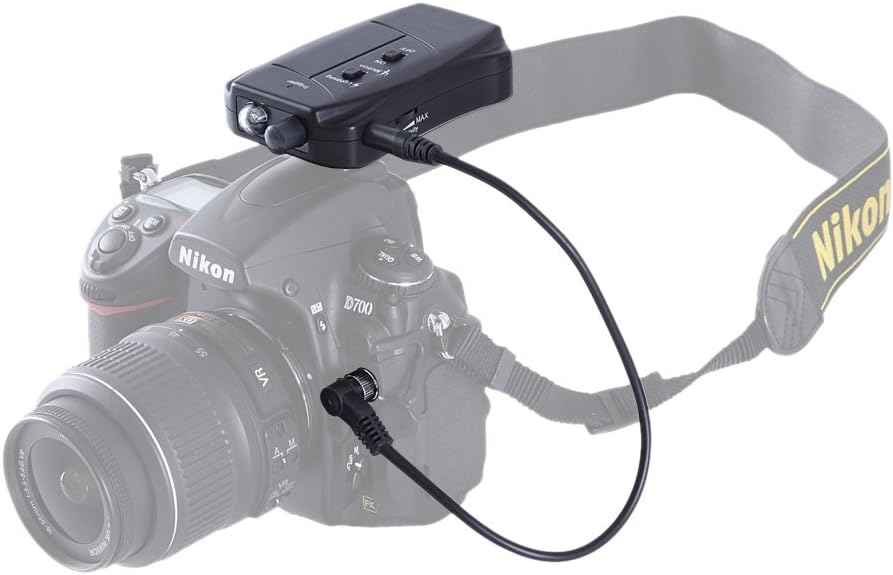

Détecteur de foudre pour appareil photo
Un système automatisé pour capturer la beauté des éclairs

Ce détecteur de foudre est un dispositif conçu pour capturer automatiquement les éclairs lors d'orages. Il est directement connecté à l'appareil photo via une prise jack et peut également être utilisé avec un capteur infrarouge pour plus de précision.
Lorsqu'un éclair apparaît, le capteur lumineux détecte la forte augmentation de lumière et envoie immédiatement un signal électronique à l'appareil photo, déclenchant ainsi la prise de vue en une fraction de seconde.
Technologies utilisées
Arduino
Capteurs photosensibles
Electronique
C++
Caractéristiques principales
- Détection ultra-rapide des éclairs (moins de 50ms)
- Compatible avec la plupart des appareils photo DSLR
- Sensibilité ajustable pour différentes conditions météorologiques
- Boîtier résistant aux intempéries
- Batterie longue durée (>8h d'utilisation continue)